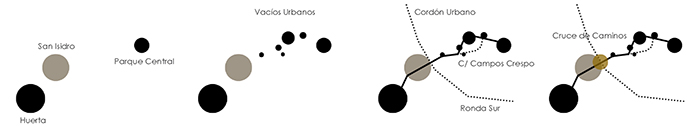
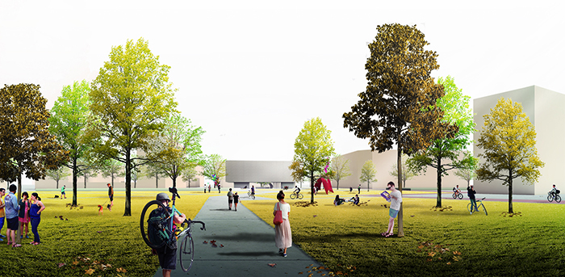
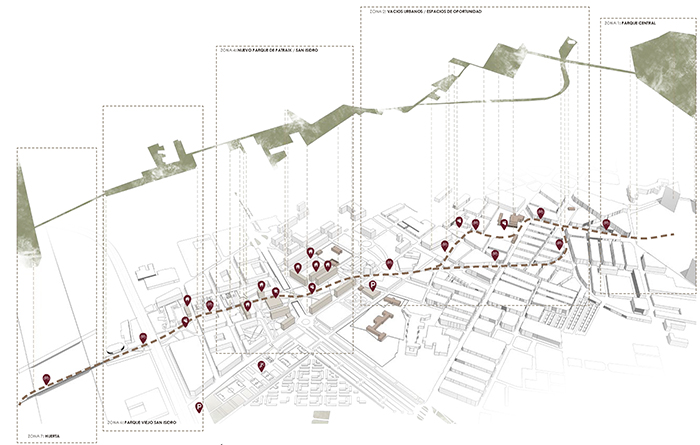
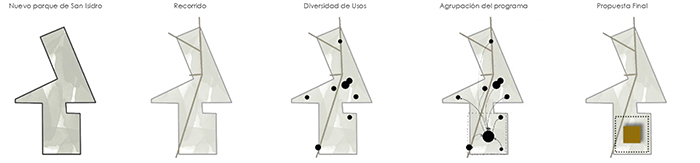
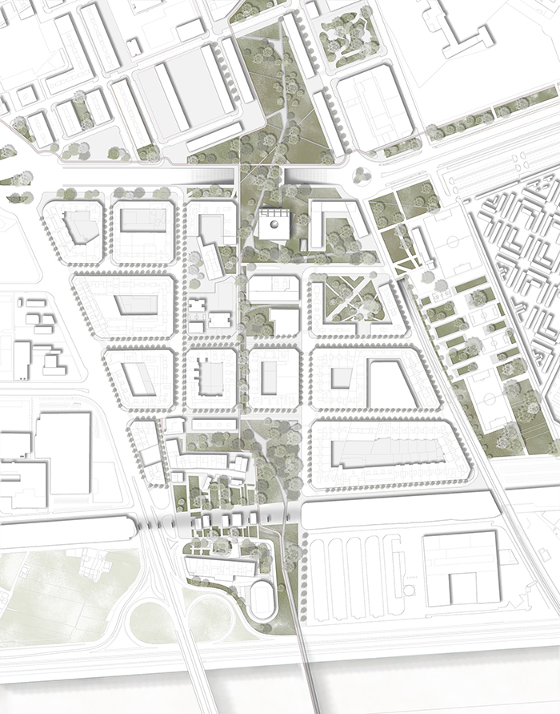
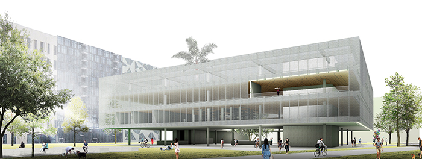
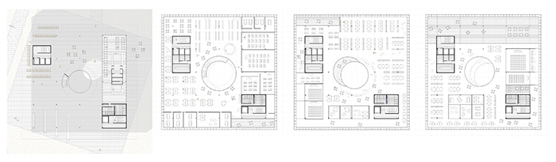
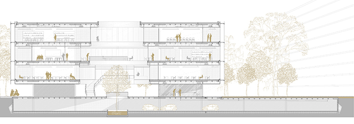
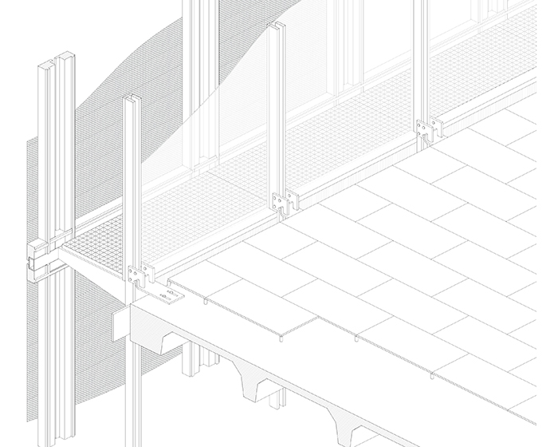

Urban Connectivity
Valencia, Spain | 2016 | #MasterThesys #UrbanDesign
In the city of Valencia there are different districts which are far from the center and suffer a total or partial disengagement from the rest of the city. This is the case of the neighborhood to be developed, called San Isidro.
This district is separated from the city by different urban barriers. Some of the barrieres are an industrial zone, the graveyard of Valencia, the railways of the train and different highways that are unplugging and isolating the district of San Isidro from the rest of the city .
 The project consists in the proposal of a new urban development that brings this district closer to the city by bonding different urban voids throught a green belt that links our districto with the city in general.
Once the new urban environment is planned, a more pure architectural element is proposed. The new building aims to be a landmark and social focus within the park where it is located and attract people from very isolated places for their confluence and improvement of relationships.
The goal of the building is to serve as artistic/educational/working hub and attract not only the people of the San Isidro district but, throught the green belt that links with the city center, to bring the people from overall the city as well.
 The facade of the building consists on a double skin - glass wall and deploye - that helps the overall energy efficiency of the building at the same time that prevents from the intense sun light during certain hours of the day.
